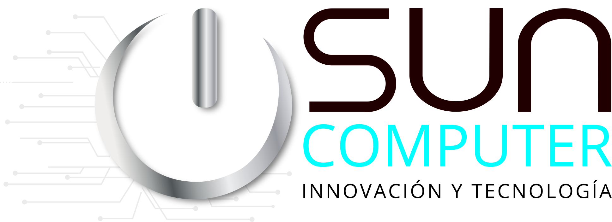

Suministro e infraestructura
Equipos de cómputo, redes, servidores y soluciones de respaldo eléctrico.

Somos SunComputer Innovación y Tecnología SAS. Desde Girardot acompañamos a empresas y organizaciones en sus necesidades tecnológicas.
Reunimos conocimiento técnico y experiencia en gestión para conectar equipos, personas y procesos. Nuestro enfoque combina soluciones prácticas con acompañamiento durante su implementación.
Equipos de cómputo, redes, servidores y soluciones de respaldo eléctrico.
Atención de equipos, configuración y continuidad de la operación tecnológica.
Herramientas para ventas, inventarios, órdenes de servicio y gestión de información.
Dominios, correo empresarial y entornos digitales de trabajo.
Protección de equipos y acompañamiento en el cuidado de la información.
Acompañamiento para que las personas incorporen herramientas digitales a su trabajo.
Cuéntanos el alcance. Podemos preparar una propuesta y presentar la experiencia relacionada con tu necesidad.
Conversemos